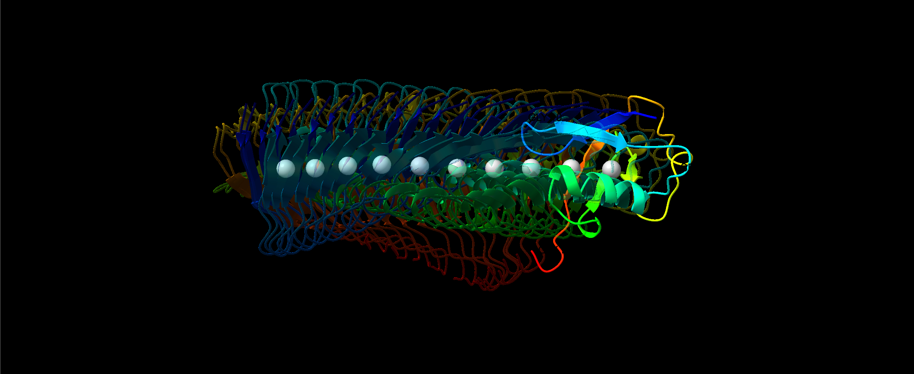
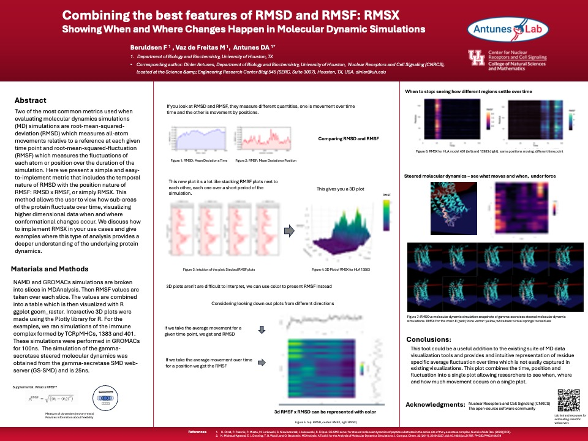
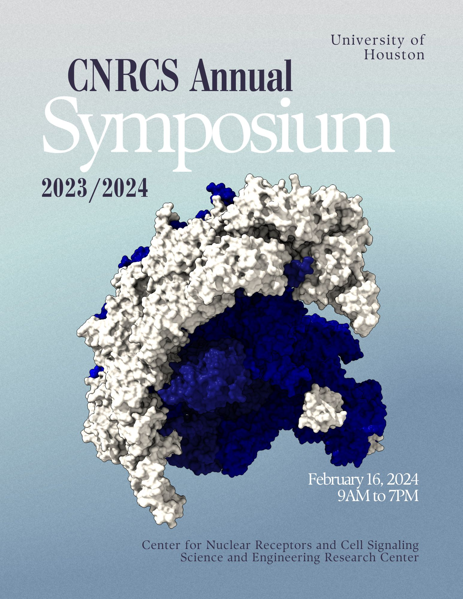

RMSX and Flipbook in Scientific Reports
First-author paper introducing RMSX and Flipbook for high-resolution mapping of protein motion in molecular dynamics simulations.
Computational immunology, molecular dynamics,
and scientific software
Welcome
I am a Ph.D. candidate in Biochemistry at the University of Houston in the Antunes Lab, working at the interface of computational immunology, molecular dynamics, and scientific software. I develop tools for analyzing protein motion and modeling T-cell receptor recognition, with the goal of improving the safety and interpretability of cell-based immunotherapies.

First-author paper introducing RMSX and Flipbook for high-resolution mapping of protein motion in molecular dynamics simulations.

Co-authored a JITC review mapping computational approaches for T-cell receptor repertoire analysis and cancer immunotherapy design.

Presented a mathematical model of interclonal T-cell competition at SITC 2025, published as a JITC meeting abstract.

Selected for the James P. Taylor Foundation for Open Science Scholarship to present RMSX and Flipbook at GCC2026.
RMSX and Flipbook are open-source tools for seeing when and where proteins move during molecular dynamics simulations. This Molstar viewer runs directly in the browser, including from notebooks and interactive reports.